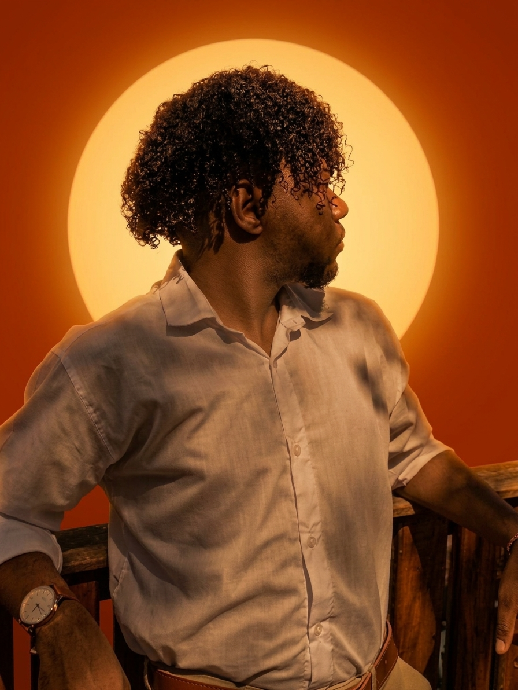
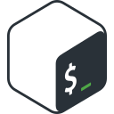
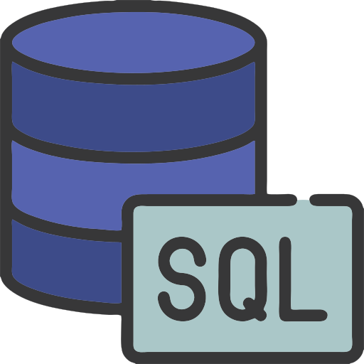
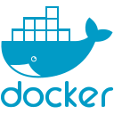

fev/2026 — ago/2026
Estagiário de Tecnologia
Luiza Labs · Grupo Magalu
Desenvolvimento e manutenção de sistemas internos na vertical de tecnologia do Grupo Magazine Luiza.

Estudante de Análise e Desenvolvimento de Sistemas na Fatec Franca (formatura dez/2027), com background em Administração e Hardware. Estagiário na Luiza Labs (fev–ago/2026) e colaborador no Grupo Magalu. Foco em back-end e DevOps/DevSecOps.
Inglês TOEIC B1. Apaixonado por automação, infraestrutura e boas práticas de engenharia.

Desenvolvimento e manutenção de sistemas internos na vertical de tecnologia do Grupo Magazine Luiza.
Atendimento e resolução de conflitos em plataforma de marketplace — desenvolvimento de habilidades de análise e resolução de problemas.
Formação técnica em manutenção e configuração de hardware, redes e infraestrutura física.

Bash
SQL
DockerSistema de Controle de Gastos Pessoais
Controle financeiro pessoal com dados bancários reais via Open Finance/Pluggy. Mascote: um tatu-bola. Back-end em FastAPI + PostgreSQL + SQLAlchemy/Alembic. Front em React + Vite + TypeScript + Tailwind. Orquestrado com Docker Compose.
from fastapi import APIRouter, Depends
from sqlalchemy.orm import Session
from app.db import get_db
from app.models import Transaction
router = APIRouter(prefix="/transactions")
# Retorna gastos agrupados por categoria
@router.get("/summary")
def get_summary(db: Session = Depends(get_db)):
return db.query(Transaction).group_by(
Transaction.category
).all()CRUD com RBAC para ONG
Sistema CRUD com controle de acesso por papéis (RBAC) desenvolvido para uma ONG. Arquitetura em Java/Spring Boot com PostgreSQL.
Ecossistema de Automação Discord
Bot de suporte nível 1 no Discord via n8n. Cria threads por chamado, triagem de prioridade, coleta dados via Tally, sincroniza com Google Sheets, monitora SLA. Rodando em Docker.
from datetime import datetime, timedelta
# Verifica tickets com SLA em risco
def check_sla(tickets: list[dict]) -> list[dict]:
now = datetime.utcnow()
at_risk = []
for ticket in tickets:
deadline = ticket["created_at"] + timedelta(
hours=ticket["sla_hours"]
)
if (deadline - now).seconds < 3600:
at_risk.append(ticket)
return at_riskSmartphone → Servidor ARM64
Celular Android transformado em servidor ARM64. Ubuntu via Linux Deploy, Nginx, Cloudflare Tunnels. Planejado para hospedar o próprio portfólio.
API REST Spring Boot
API REST em Spring Boot com PostgreSQL, Flyway, JPA/Hibernate e Lombok. Desenvolvida em GitHub Codespaces para projeto semestral da Fatec.
import pytest
from sqlalchemy import create_engine
from sqlalchemy.orm import sessionmaker
from app.db import Base
# Banco em memória para testes isolados
@pytest.fixture(scope="session")
def db_session():
engine = create_engine("sqlite:///:memory:")
Base.metadata.create_all(engine)
Session = sessionmaker(bind=engine)
yield Session()
Base.metadata.drop_all(engine)BankCLI + POO + Collections
Repositório de estudos em Java: POO, Collections Framework, persistência em CSV. Inclui o projeto BankCLI — sistema bancário via terminal.
python-fundamentals + Data
Estudos progressivos de Python: sintaxe, POO, decorators, generators. Projetos em Django e FastAPI. Bibliotecas de dados com pandas e NumPy.
B1 — Inglês
ETS Global
Solutions Architect Associate
Amazon Web Services
Certification
GitHub
Kubernetes & Cloud Native Associate
CNCF / Linux Foundation
Buscando oportunidades onde possa construir sistemas robustos, pipelines de CI/CD sólidos e infraestrutura segura em nuvem.
ENTRAR EM CONTATO →Aberto a estágios, posições júnior e projetos freelance em back-end, DevOps e automação.